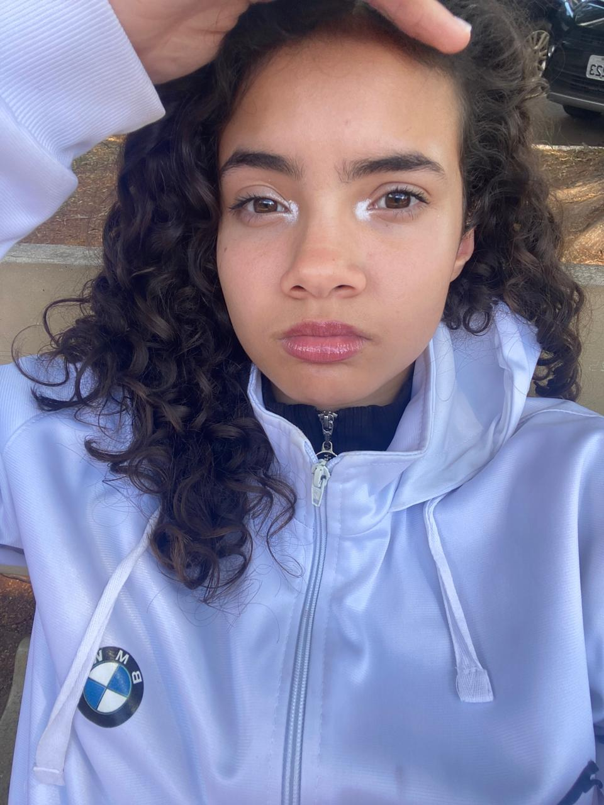
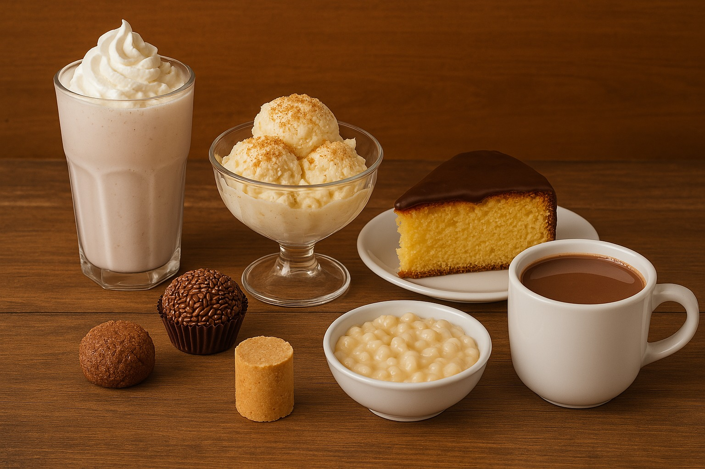
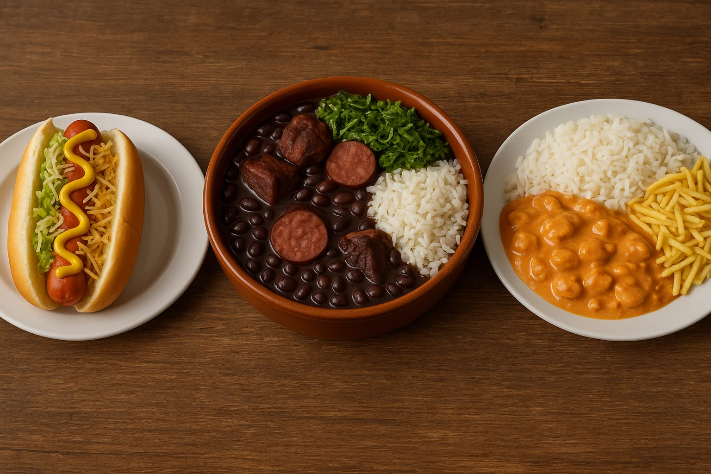
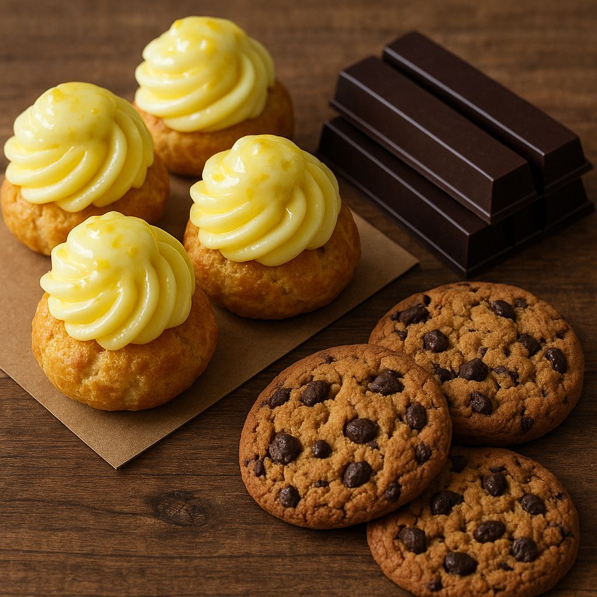
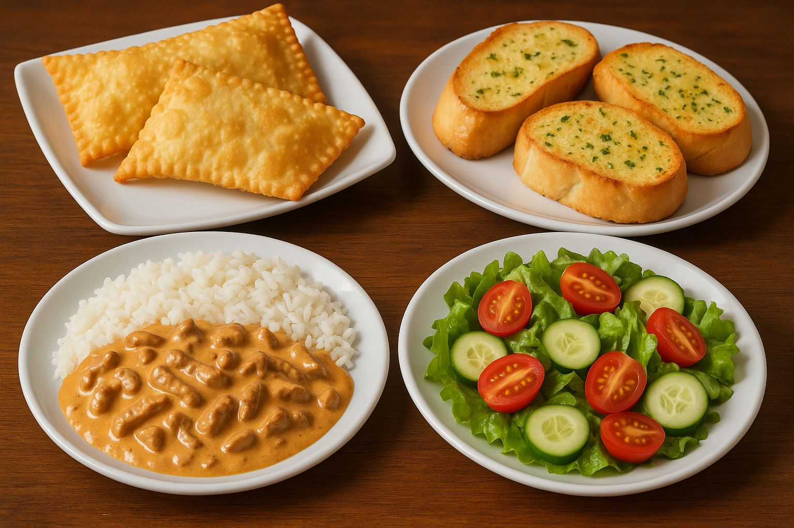
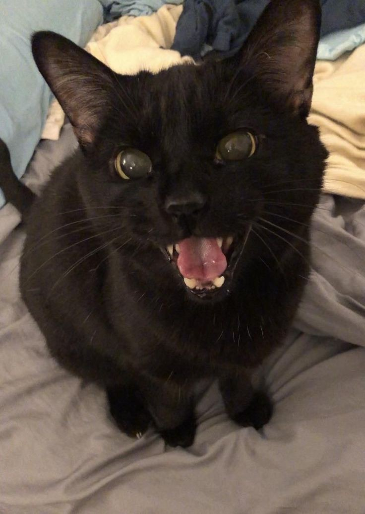
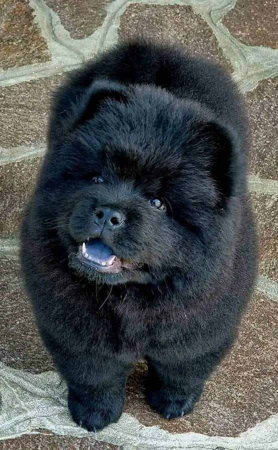

Acesse o link abaixo para fazer um site só seu:
Cadastro|
Meu nome é Amanda, eu tenho 16 anos, meu aniversário é no último dia do ano (31/12) e nasci na cidade de Limeira-SP. As coisas mais interessantes da minha vida foram: viajar de carro com a família até Marabá-PA (fiz amigos por lá também), ter conhecido a minha melhor amiga, acampar, ter feito piercings, meu primeiro piquenique entre amigos, minha primeira festa do pijama, minha festa de aniversário temática do jogo Undertale e a época em que tive gatos de estimação. |
|  |
Meu nome é Júlia, eu tenho 16 anos e meu aniversário é dia 24 de abril (o mesmo dia que o Cotil inclusive). Eu nasci em Cosmópolis, mas moro em Artur Nogueira desde que eu nasci. Desde pequena eu fui ligada a jogos, e em partes eu escolhi o curso de Desenvolvimento de Sistemas porque pensei em seguir na área digital, antes eu pensava em cursar programação de jogos, hoje em dia penso em cursar Ciência da Computação. Coisas interressantes da minha foram: Meu aniversário de 15 anos, |
Origem e significado:
Amanda é a variante feminina de Amando, nome originado no latim Amandu, Amandus.
Deriva do verbo amare e quer dizer “amável, "o que deve ser amado", "digno de amor”.
O nome traz um simbolismo que remete ao amor, ao cuidado e ao carinho.
Curiosidade:
O primeiro registro conhecido do nome Amanda é do ano de 1212, na região de Warwickshire, na Inglaterra.
O nome ficou popular na Inglaterra durante o século XVII, pois nomeou personagens de diversos autores e poetas naquela época. A personagem de mais destaque foi a do dramaturgo Colley Cibber, na peça de 1696 "Love’s Last Shift".
É um nome que não é encontrado na Bíblia, somente a sua versão masculina nomeia um santo que viveu provavelmente entre os anos de 589 e 679.
Santo Amando nasceu na França e ficou conhecido por fundar vários mosteiros. Os mosteiros mais famosos, dedicados a São Pedro, são situados na Bélgica. Além disso, Santo Amando foi bispo da cidade holandesa de Maastricht.
O nome Amanda é utilizado desta forma em diversos idiomas, tais como inglês, espanhol, italiano, sueco, norueguês, dinamarquês, holandês, alemão e finlandês. Variações do nome são: Amandine (francês) e Amánta/Αμάντα (grego).
Origem e significado:
Significa “macio”, “fofo”, “jovem”, “cheia de juventude”, “filha de Júpiter”.
Curto, belo e, ao mesmo tempo, imponente, o nome Júlia é a versão feminina de Júlio, que tem origem a partir do latim Julius, derivado da palavra grega ioulos,
que significa “barba rala”, “felpuda”, “macia”, em referência aos pelos faciais dos jovens.
Por extensão, pode ser atribuído os significados de “jovem”, “jovial” e "cheia de juventude” ao nome Júlio e às suas variantes.
Outro significado associado a este nome faz referência
ao Deus romano Júpiter. Por este motivo, Júlia também pode significar “filha de Júpiter”.
Uma das personalidades históricas que ajudou a popularizar o nome Júlio e as suas variantes ao redor do mundo foi o imperador romano Júlio César.
Curiosidade:
O nome Júlia foi muito comum na França e na Itália durante o século XVI, nas formas Julie e Giulia, respectivamente.
Foi utilizado pelos falantes da língua inglesa no mesmo século, mas teve sua popularidade ampliada através do modismo de nomes clássicos
no século XVIII. Na Irlanda, a variante Julia foi adotada no século XIX para substituir o nome Sheila.
É o nome de uma personagem bíblica, mencionada brevemente no Novo Testamento em Romanos, como uma mulher a quem o apóstolo Paulo se dirige.
Uma das personagens históricas
mais icônicas com este nome foi Júlia, a Velha, filha do imperador romano Augusto.
Atualmente, o nome Júlia pode ser encontrado com maior quantidade de registros em países como o Brasil, os Estados Unidos, o México, o Peru, a Alemanha, a Espanha e a Argentina.
Voltar
Geralmente as pessoas tendem a ter sonhos como metas, algo “sério”, como por exemplo ter o sonho de possuir um carro. Já eu, tenho sonhos mesmo. Uma vontade que não necessariamente é algo grande e de extrema importância, como:
São pequenos sonhos, mas que enfeitam a vida e nos dá motivos para continuar a nossa jornada.
Meus sonhos geralmente são de longo prazo e "comuns", como terminar a faculdade, comprar a minha casa dos sonhos e decorar ela do jeito que eu sempre imaginei. Mas igual a Amanda, eu tenho "sonhos" que queria realizar:
| Amanda: | Júlia: |
|---|---|
|
Eu amoooo doces! Os meus favoritos são:
|
 |
|
Mas também gosto de alguns pratos salgados:
|
 |
|
Eu gosto bastante de doces, mas geralmente gosto de comer eles quando estou nervosa:
|
 |
|
Eu prefiro salgados, os meus favoritos são:
|
 |
As corujas são animais cercados de simbolismo. Enquanto algumas pessoas acreditam que elas estão relacionadas com conhecimento e sabedoria, outros classificam-nas como símbolo de azar, morte e bruxaria. A relação com mau agouro, azar e morte se deve ao fato, principalmente, de as corujas serem animais, em sua maioria, noturnos e com uma vocalização considerada sombria por muitos. Na Grécia Antiga, a coruja era companheira da deusa Atena, e tornou-se símbolo de sabedoria e conhecimento. Algumas antigas tribos indígenas da América do Norte acreditavam que essas aves eram mensageiras de morte e doenças, enquanto outras as consideravam espíritos protetores. No Brasil, algumas tribos consideravam-nas sagradas. Algumas culturas acreditavam, ainda, que as corujas eram emissárias de bruxas. No Oriente Médio, elas são associadas à morte e destruição.
Durante muito tempo eu possui este pequeno felino como animal de estimação, e descobri que há um estudo sobre a personalidade de pessoas que convivem com gatos: Veja sobre!
A raposa é frequentemente associada à inteligência, astúcia, sagacidade, adaptabilidade e, em algumas culturas, à malandragem ou à falsidade. A sua habilidade de sobreviver e se adaptar a diferentes ambientes contribui para esta imagem de animal inteligente e esperto. Em algumas tradições, a raposa é também vista como um símbolo de transformação e orientação espiritual.
 Meu sonho é ter vários cachorros, mas um dos principais é o Chow Chow, e uma coisa muito curiosa que acho nele é a língua roxa, achei um site que fala sobre:
Veja sobre!
Voltar